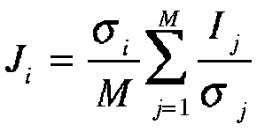

ANSI-C programs: temp_filt.c and temp_filt_ad.c
NAME
temp_filt - Multi-temporal filtering of co-registered data sets
of format float.
temp_filt_ad - Multi-temporal filtering of co-registered data
sets of format float using adaptive spatial mean estimate.
SYNOPSIS
temp_filt <data_tab> <width> [waz] [wr]
[wt_flag] [zero_flag] [loffset] [nlines]
| <data_tab> | (input) two column list of the names of input and
output data files (float) input file 1 output file 1 input file 2 output file 2 ... ... |
| <width> | number of samples/row |
| [waz] | spatial averaging filter width in azimuth pixels (default=1.0) |
| [wr] | spatial averaging filter width in range pixels (default=1.0) |
| [wt_flag] | weighting function flag (default=0: uniform; 1: linear; 2: gaussian) |
| [zero_flag] | default: zero_flag=0 => 0.0 interpreted as missing value zero_flag=1 => 0.0 interpreted as valid data value |
| [loffset] | number of lines offset to starting line (default=0) |
| [nlines] | number of lines to process (default: 0=entire file) |
temp_filt_ad <data_tab> <width>
[zero_flag] [loffset] [nlines]
| <data_tab> | (input) three column list of the names of input
and output data files (float) input file 1 spatially filtered file 1 output file 1 input file 2 spatially filtered file 2 output file 2 ... ... ... |
| <width> | number of samples/row |
| [zero_flag] | default: zero_flag=0 => 0.0 interpreted as missing value zero_flag=1 => 0.0 interpreted as valid data value |
| [loffset] | number of lines offset to starting line (default=0) |
| [nlines] | number of lines to process (default: 0=entire file) |
EXAMPLES
temp_filt data_tab 4912 9 9 1 0 0
500
temp_filt_ad data_tab 4912 1
Multi-temporal filtering of 3 co-registered multi-look intensity images, resulting in 3 filtered images. Priviously calculated minimum mean square error ("Frost-filtered") are used as the (adaptive) spatial mean estimates. 0.0 values are interpreted as valid values.DESCRIPTION
temp_filt and
temp_filt_ad conduct
filtering of multi-temporal, co-registered SAR intensity images.
The approach used for the filtering of multi-temporal,
co-registered SAR intensity images is optimal under the
assumption of uncorrelated images (private communication S.
Quegan). The speckle reduction achieved for correlated images is
not optimal. For the filtering of rather uncorrelated ERS data
acquired during 35 day repeat orbits this filtering is very
appropriate and provides excellent speckle reduction for the
individual images.
The basic filtering equation used is:

where:
i= 1, ... ,M: file number
M: number of input files
Ij: Input intensity of image i
Ji: Filtered intensity of image i
sigmai: Spatial
average of input intensity of image i
For the estimation of the spatial averages of the input intensity images a moving weighted averaging filter is used by the program temp_filt. The user can select between different weighting functions and indicate the filter window size in range and azimuth.
Null (0.0) values in the input file can either be interpreted as missing data (by setting zero_flag = 0), or as valid data values. In the case of the filtering of SAR data only the first interpretation makes sense. There is the option to process a sub-section of the input data by indicating the ofset to the starting line (the default=0 indicates to start with the first data line) and number of lines to process.
For M registered input files temp_filt and temp_filt_ad generate M temporally filtered output files with reduced speckle noise. To produce a single output image of the mean over the M registered input files the program temp_lin_var or temp_log_var is used. In addition the program lin_comb allows to calculate linear combinations of M registered input files.
The program temp_filt_ad allows to uses previously determined (adaptive) estimates of the spatial means. Spatially adaptive estimation is supported by the program frost.
The names of the input and output data files are stored in a text file called the data_tab in the argumenet list. The data_tab consists of several columns. In temp_filt the first column is the input data file and the second column is the associated temperally filtered output file. For temp_filt_ad there are 3 columns in the data_tab file. The first column is the input data file, the second is the spatially filtered input data, and the third is the temporally filtered output file.
OPTIONS
Speckle reduction by multi-temporal filtering can be used as a
preparation step to the calculation of ratios and the temporal
variability of co-registered backscatter images.
SEE ALSO
frost, lin_comb, temp_lin_var, temp_log_var, typedef_ISP.h .
© Copyrights for Documentation, Users Guide and Reference Manual by Gamma Remote Sensing, 2009.
UW, CW, last change 6-Apr-2009.